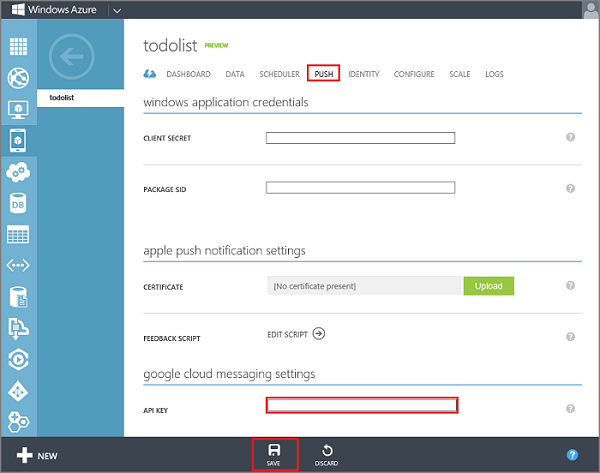
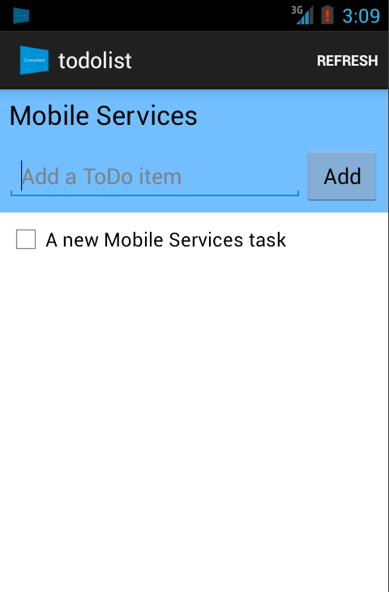

Get started with push notifications in Mobile Services
This topic shows you how to use Windows Azure Mobile Services to send push notifications to an Android app. In this tutorial you add push notifications using the Google Cloud Messaging (GCM) service to the quickstart project. When complete, your mobile service will send a push notification each time a record is inserted.
This tutorial walks you through these basic steps to enable push notifications:
- Register your app for push notifications
- Configure Mobile Services
- Add push notifications to the app
- Update scripts to send push notifications
- Insert data to receive notifications
This tutorial requires the following:
- Mobile Services Android SDK
- An active Google account
This tutorial is based on the Mobile Services quickstart. Before you start this tutorial, you must first complete Get started with Mobile Services.
Register your appRegister your app for push notifications
To complete the procedure in this topic, you must have a Google account that has a verified email address. To create a new Google account, go to accounts.google.com.
-
Navigate to the Google apis web site, sign-in with your Google account credentials, and then click Create project....
 Note
NoteWhen you already have an existing project, you are directed to the Dashboard page after login. To create a new project from the Dashboard, expand API Project, click Create... under Other projects, then enter a project name and click Create project.
-
Click the Overview button in the left column, and make a note of the Project Number in the Dashboard section.
Later in the tutorial you set this value as the SENDER_ID variable in the client.
-
On the Google apis page, click Services, then click the toogle to turn on Google Cloud Messaging for Android and accept the terms of service.
-
Click API Access, and then click Create new Server key...

-
In Configure Server Key for API Project, click Create.

-
Make a note of the API key value.

Next, you will use this API key value to enable Mobile Services to authenticate with GCM and send push notifications on behalf of you app.
Configure the serviceConfigure Mobile Services to send push requests
-
Log on to the Windows Azure Management Portal, click Mobile Services, and then click your app.

-
Click the Push tab, enter the API Key value obtained from GCM in the previous procedure, and then click Save.

You mobile service is now configured to work with GCM to send push notifications.
Add push notificationsAdd push notifications to your app
-
In Eclipse, click Window, then click Android SDK Manager.
-
In the Android SDK Manager, expand Extras, check Google Cloud Messaging for Android Library, make a note of the SDK Path, click Install Package, select Accept to accept the license, then click Install.

-
In the Android SDK Manager, under the Android n.m (API x) node, check Google APIs, then click Install.
-
Browse to the SDK path (usually in a folder named
adt-bundle-windows-x86_64), and copy thegcm.jarfile from the\extras\google\gcm\gcm-client\distsubfolder into the\libsproject subfolder, then in Package Explorer, right-click the libs folder and click Refresh.The
gcm.jarlibrary file is now shown in your project. -
Open the project file AndroidManifest.xml and add the following new permissions after the existing
uses-permissionelement:<permission android:name="**my_app_package**.permission.C2D_MESSAGE" android:protectionLevel="signature" /> <uses-permission android:name="**my_app_package**.permission.C2D_MESSAGE" /> <uses-permission android:name="com.google.android.c2dm.permission.RECEIVE" /> <uses-permission android:name="android.permission.GET_ACCOUNTS" /> <uses-permission android:name="android.permission.WAKE_LOCK" /> -
Add the following code into the
applicationelement:<receiver android:name="com.google.android.gcm.GCMBroadcastReceiver" android:permission="com.google.android.c2dm.permission.SEND"> <intent-filter> <action android:name="com.google.android.c2dm.intent.RECEIVE" /> <action android:name="com.google.android.c2dm.intent.REGISTRATION" /> <category android:name="**my_app_package**" /> </intent-filter> </receiver> <service android:name=".GCMIntentService" /> -
Note that in the
uses-sdkelement, the targetSdkVersion must be 16 or greater since notifications don't work for earlier versions of the API. -
In the code inserted in the previous two steps, replace
**my_app_package**with the name of the app package for your project, which is the value of themanifest.packageattribute. -
Open the file ToDoItem.java, add the following code to the TodoItem class:
@com.google.gson.annotations.SerializedName("channel") private String mRegistrationId; public String getRegistrationId() { return mRegistrationId; } public final void getRegistrationId(String registrationId) { mRegistrationId = registrationId; }This code creates a new property that holds the registration ID.
NoteWhen dynamic schema is enabled on your mobile service, a new 'channel' column is automatically added to the TodoItem table when a new item that contains this property is inserted.
-
Open the file ToDoItemActivity.java, and add the following import statement:
import com.google.android.gcm.GCMRegistrar; -
Add the following private variables to the class, where
<SENDER_ID>is the project ID assigned by Google to your app in the first procedure:private String mRegistationId; public static final String SENDER_ID = "<SENDER_ID>"; -
In the onCreate method, add this code before the MobileServiceClient is instantiated:
GCMRegistrar.checkDevice(this); GCMRegistrar.checkManifest(this); mRegistationId = GCMRegistrar.getRegistrationId(this); if (mRegistationId.equals("")) { GCMRegistrar.register(this, SENDER_ID); }This code get the registration ID for the device.
-
Add the following line of code to the addItem method:
item.setRegistrationId(mRegistationId);This code sets the registrationId property of the item to the registration ID of the device.
-
In the Package Explorer, right-click the package (under the
srcnode), click New, click Class. -
In Name type
GCMIntentService, in Superclass typecom.google.android.gcm.GCMBaseIntentService, then click Finish
This creates the new GCMIntentService class.
-
Add the following import statements:
import android.app.NotificationManager; import android.support.v4.app.NotificationCompat; -
In the new class, add the following constructor:
public GCMIntentService(){ super(ToDoActivity.SENDER_ID); }This code invokes the Superclass constructor with the app
SENDER_IDvalue of the app. -
Replace the existing onMessage method override with the following code:
@Override protected void onMessage(Context context, Intent intent) { NotificationCompat.Builder mBuilder = new NotificationCompat.Builder(this) .setSmallIcon(R.drawable.ic_launcher) .setContentTitle("New todo item!") .setPriority(Notification.PRIORITY_HIGH) .setContentText(intent.getStringExtra("message")); NotificationManager mNotificationManager = (NotificationManager) getSystemService(Context.NOTIFICATION_SERVICE); mNotificationManager.notify(0, mBuilder.build()); }NoteIn this tutorial, only the onMessage override is implemented. In a real-world app you should consider implementing all four method overrides.
Your app is now updated to support push notifications.
Update the insert scriptUpdate the registered insert script in the Management Portal
-
In the Management Portal, click the Data tab and then click the TodoItem table.

-
In todoitem, click the Script tab and select Insert.

This displays the function that is invoked when an insert occurs in the TodoItem table.
-
Replace the insert function with the following code, and then click Save:
function insert(item, user, request) { request.execute({ success: function() { // Write to the response and then send the notification in the background request.respond(); push.gcm.send(item.channel, item.text, { success: function(response) { console.log(‘Push notification sent: ’, response); }, error: function(error) { console.log(‘Error sending push notification: ’, error); } }); } }); }This registers a new insert script, which uses the gcm object to send a push notification (the inserted text) to the device provided in the insert request.
Test the appTest push notifications in your app
When you run this app in the emulator, make sure that you use an Android Virtual Device (AVD) that supports Google APIs.
-
Restart Eclipse, then in Package Explorer, right-click the project, click Properties, click Android, check Google APIs, then click OK.

This targets the project for the Google APIs.
-
From Window, select Android Virtual Device Manager, select your device, click Edit.

-
Select Google APIs in Target, then click OK.

This targets the AVD to use Google APIs.
-
From the Run menu, then click Run to start the app.
-
In the app, type meaningful text, such as A new Mobile Services task and then click the Add button.

-
You will see an icon appear in the upper left corner of the emulator.

-
Click in the icon to display the notification.

You have successfully completed this tutorial.
Next steps
This concludes the tutorials that demonstrate the basics of working with push notifications. Consider finding out more about the following Mobile Services topics:
-
Get started with data
Learn more about storing and querying data using Mobile Services. -
Get started with authentication
Learn how to authenticate users of your app with Windows Account. -
Mobile Services server script reference
Learn more about registering and using server scripts.